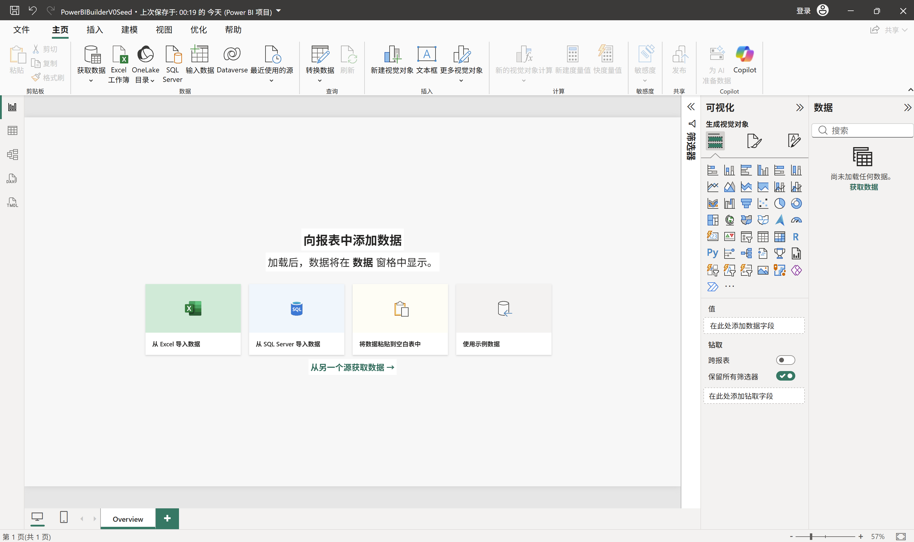
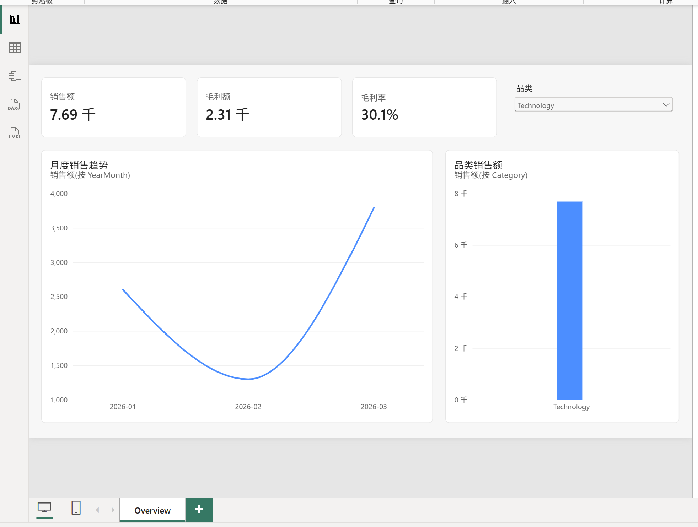

MCP 安装目录
存放 MCP 可执行文件。适合放在稳定、版本化的用户工具目录，不纳入业务项目 Git。
一份基于真实 V0 实验整理的图文教程：哪些可以由 AI 直出，哪些必须人工打开、保存和关闭，以及 MCP、语义模型和 PBIR 如何在同一条链路中协作。
01 · RESULT
Codex 可以完成绝大部分工程工作；Power BI Desktop 的生命周期、安全确认和业务签字仍由人负责。
本次实测结果：3 张模型表、2 条关系、5 个 DAX 度量值和 6 个视觉对象均成功进入 PBIP；Desktop 可以打开、筛选、保存和重开。
02 · PATHS
很多配置问题来自把 MCP 程序、Power BI 项目和数据源放在同一个概念里。
存放 MCP 可执行文件。适合放在稳定、版本化的用户工具目录，不纳入业务项目 Git。
每个报表自己的 `.pbip`、`.Report/` 和 `.SemanticModel/`。它可以位于任意正常工作目录。
CSV、Excel 或数据库连接地址。由 Power Query/M 引用，换机器时可能需要重新绑定。
03 · ONE-TIME SETUP
前两项决定项目是否以可外部编辑的 PBIP/PBIR 保存；Auto date/time 设置用于避免隐藏日期表干扰显式日期模型。
Power BI Project `.pbip` 保存选项。
使用增强的元数据格式存储报表（PBIR）。
标准种子“当前文件”中的 Auto date/time。
保存种子前再次确认。
全局“新文件的自动日期/时间”。
避免以后创建新种子时重复踩坑。
设置预览功能后重启 Desktop。“当前文件”和“全局新文件”是两个设置位置；只改全局设置不能替代对当前种子的检查。


04 · MCP
MCP 是 Codex 与 Power BI 模型之间的本地工具桥。它不属于某个 PBIP，也不需要复制到每个项目。
本次实测：微软官方 Windows x64 包 0.5.0-beta.13 安装到版本化用户目录。下次只要 exe 路径和 Codex 注册不变，就可以直接复用。
以上参数是本次锁定版本的实测配置。其他版本以该版本自己的帮助信息为准。初次使用建议保留写操作确认。
05 · SEED
当前稳定路线仍需要一个由 Desktop 正式保存的空白工程壳。以后每个项目复制它，不再重复新建。
不加载业务数据；保留唯一空白页面并命名为 Overview。
确认 PBIR 已启用，当前文件 Auto date/time 已关闭。
保存类型选择“Power BI 项目文件 (*.pbip)”，然后关闭 Desktop。
将完整目录纳入 Git，后续只复制，不直接修改种子原件。


06 · PER REPORT
真正关键的是两次人工交接：先打开让 MCP 建模，再保存关闭让 Codex 安全生成 PBIR。
明确业务问题、指标口径、目标用户、数据源、页面和筛选要求。
Desktop 关闭Codex 固定表、关系、DAX 和页面规格，建立运行目录并复制完整种子。
Desktop 关闭打开运行目录中的 `.pbip`，不是种子原件；等待 Desktop 完全加载。
Desktop 打开并保持创建 M、分区、表、关系、日期属性、DAX 和格式，刷新并查询。
Desktop 必须打开明确点击保存，等待完成后关闭。这样 MCP 的运行时修改才会进入磁盘 TMDL。
保存后关闭Codex 离线创建视觉对象、字段绑定、交互、标题和布局。
Desktop 保持关闭处理凭据和弹窗，检查指标、筛选和布局，再保存 Desktop 规范化后的文件。
Desktop 重新打开Codex 保留 PBIP、Report、SemanticModel 以及必要的数据和说明。
07 · DESKTOP STATE
把这条时间线记住，可以避开“模型没落盘”和“PBIR 被并发重写”两类问题。
复制种子与准备数据。
让 MCP 连接本地模型。
人工点击保存后关闭。
Codex 离线修改报告。
检查视觉与交互。
保存规范化项目。
不要把两种编辑同时进行。Desktop 中有未保存修改时，不要让外部程序直接覆盖 PBIR；先保存并关闭，再交给 Codex。
08 · HANDOFF
自动化的目标不是掩盖人工步骤，而是把人的参与压缩到授权、应用操作和业务判断。
09 · DELIVERY
`.pbip` 主要是入口文件。真正的报告和模型位于两个同级目录，必须整体移动和分享。


10 · FAQ
不需要。使用稳定的用户级工具目录更合适，也避免把约 40 MB 的二进制误提交到每个项目。
不需要。保持 MCP 路径和 Codex 注册不变；打开新的 PBIP 后重新连接新的 Desktop 实例即可。
这是当前已验证的稳定入口。AI 从空目录直出整个工程壳属于后续零种子实验，尚未写入生产流程。
不是。当前是工程生成高度自动化、Desktop 生命周期与业务授权保留人工控制的人机协作流程。
本教程只交付本地 PBIP。Service 工作区权限、网关、凭据和计划刷新应另走部署流程。
本地 CSV 绝对路径和凭据可能需要重新绑定；交付说明中应明确数据源位置与刷新要求。